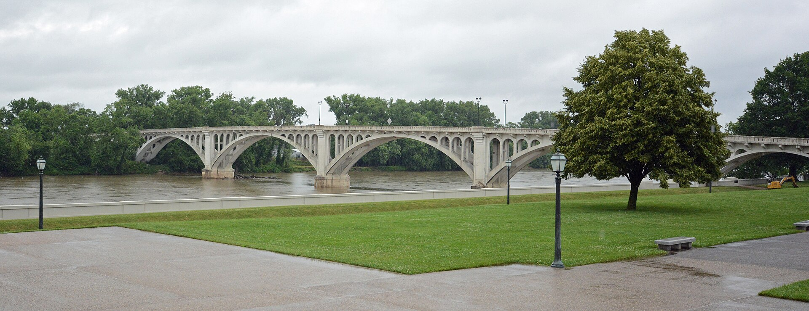

Vincennes, Indiana
Vincennes Riverwalk on the Wabash
Lincoln Memorial Bridge over the Wabash, beside the Clark memorial. Photograph by Jud McCranie, CC BY-SA 4.0.

The Vincennes riverwalk is a former service road turned walking path at the end of Main Street, following the Wabash River to Hart Street. An observation deck looks over the water. The path is lit, and it is open to walkers and to bicycles that are not motorized. From it you see the river, the Memorial Bridge, and the George Rogers Clark Memorial. A wooden Tecumseh stands at First and Hart. A life-size bronze of the founder stands at the end of Main.
Start at either endMain Street to Hart StreetVincennes, Indiana 47591. The pin marks the Clark memorial the path looks toward.The two sculptures Back to Indiana
- Span
- Wabash riverwalk from Main Street to Hart Street, with access from either street. Observation deck. Lit at night.
- Who may use it
- Walkers and riders on non-motorized bicycles. The old service road is now the walking path.
- What you pass
- Views of the Wabash, the Memorial Bridge, and the George Rogers Clark Memorial. Tecumseh at First and Hart. The founder bronze at the end of Main.
- Clark park
- 401 South 2nd Street. Grounds sunrise to sunset. Visitor information (812) 882-1776. After the lot closes, park on Second Street.
- Ask the bureau
- Vincennes/Knox County Visitors and Tourism Bureau, 702 Main Street. (812) 886-0400 or (800) 886-6443.
The two ends
At First and Hart Streets, a hand-carved wooden sculpture of Tecumseh stands at the Hart Street end of the riverwalk. Peter Wolf Toth, a Hungarian immigrant who studied Native North American history, made the figure. Tecumseh had a real presence in Vincennes. He confronted William Henry Harrison, then governor of the Indiana Territory, and demanded that Shawnee land purchases be rescinded. The carving is the Hart Street marker for that argument. You reach it by walking the river path from Main, or by starting at Hart and walking the other way.
At the Main Street end, the figure is François-Marie Bissot, Sieur de Vincennes, who founded the town in 1732. In May 2018 the city dedicated a life-size bronze of him on the riverwalk, at the end of Main Street and close to the George Rogers Clark National Monument. The Friends of Vincennes Heritage commissioned it. Terre Haute artist Bill Wolfe made it. The bronze and the 1732 founding belong together: the metal is new, the claim on this bend of the Wabash is three centuries old.
The path between them is short in the way a downtown river front is short. It is not a backcountry trail with mileposts posted at the ends. What the town gives you is the span, the deck, the light, and the two sculptures. The city uses the same path for the Vincennes Historical Half Marathon and for Food Trucks on the Wabash. On an ordinary day it is a walk. On those dates it is a street for the town.
The memorial on the bank
The George Rogers Clark National Historical Park sits at 401 South 2nd Street, Vincennes, Indiana 47591, on the river the walk follows. Outdoor areas, including grass, walking paths, and picnic tables, are open from sunrise to sunset. The memorial building is open on request while the visitor center is open, and the building closes 15 minutes before the visitor center. Check the visitor center and parking-lot hours before you count on a space in the lot. After those hours, parking is along Second Street. Visitor information is (812) 882-1776. There is a short walk from the lot to the visitor center.
From the riverwalk, the memorial is the classical building in the view, with the Memorial Bridge crossing to Illinois beside it. The bridge in the photograph above is the Lincoln Memorial Bridge over the Wabash. The city calls that crossing the Memorial Bridge when it lists what the path sees. Come while the grounds are in daylight if you want to go inside the circle of columns. The river path itself stays lit after the park building has closed.
George Rogers Clark Memorial on the Wabash. Photograph by Tiffany Carpenter, CC BY-SA 4.0.

Why this bend of the river
François-Marie Bissot was born in Montreal in 1700. His father, Jean Baptiste Bissot, Sieur de Vincennes, was a French-Canadian colonist who served as liaison between New France and the Miami, working from outposts in what is now northern and central Indiana. In 1717 the son joined him at Kekionga, the Miami town at today's Fort Wayne. After his father's death he commanded Fort Ouiatenon, near today's Lafayette, and took the title Sieur de Vincennes. By 1730 he was in charge of what is now southern Indiana.
In 1732 he planted a French outpost on this part of the Wabash, a fur-trading post between the French and the Native people already living here. He chose a place long inhabited, near where the White River meets the Wabash, and at the end of an old Buffalo Trace. The Wabash itself was a political line. New France split its districts so that Canada reached down toward the river and Louisiane reached up to it. By 1745 the official border sat on the Wabash about halfway between Fort Ouiatenon and Fort Vincennes, near today's Terre Haute. The post Bissot started became the town that carries his title. The bronze at the end of Main Street is that story, set on the walk.
The American claim on the same ground arrived in the Revolution. On the morning of February 25, 1779, the British flag was not raised over Fort Sackville. Lieutenant-Governor Henry Hamilton and his garrison marched out at 10 a.m. and surrendered to Colonel George Rogers Clark. Clark had organized Kentucky militia against raids launched from British posts north of the Ohio, taken a plan for an offensive to Patrick Henry, the governor of Virginia, and carried it into the Illinois country. The memorial on the bank is the park built for that morning. The riverwalk is how a person on foot approaches the view of it.
Tecumseh's argument with Harrison belongs to a later chapter and to the other end of the same path. Harrison governed the Indiana Territory from Vincennes. Tecumseh came and demanded that purchases of Shawnee land be undone. The wooden figure at First and Hart is the town's marker for that confrontation. Harrison's house, Grouseland, is another historic building the city lists with the memorial. It is a separate visit in town, not a stop the river path claims as its own.
A walk here is a short course in three centuries of the Wabash: a French trading post in 1732, a British fort given up in 1779, a Shawnee leader facing a territorial governor, and a lit path where the town now holds a half marathon and a food-truck gathering. Stay on the path. The riverbank beyond a railing is not a swimming beach, and the memorial grounds keep their own hours. If you want a longer Indiana day after the river, the Rosie the Riveter statue is in Clarksville, on the Ohio rather than the Wabash. Closer in spirit to an old capital is the Constitution Elm in Corydon. The William Hayden English statue is the Crawford County figure.
Last verified .
Questions
Where does the Vincennes riverwalk run?
It follows the Wabash from Main Street to Hart Street, with access from either street. The path is a former service road at the end of Main Street, with an observation deck and lighting. Walkers and people on non-motorized bicycles may use it. The view takes in the river, the Memorial Bridge, and the George Rogers Clark Memorial.
Which sculptures are at the ends?
A hand-carved wooden Tecumseh by Peter Wolf Toth stands at First and Hart Streets. A life-size bronze of Francois-Marie Bissot, Sieur de Vincennes, by Bill Wolfe, stands at the end of Main Street. The city dedicated that bronze in May 2018. Bissot founded Vincennes in 1732.
How do I visit the Clark memorial from the walk?
George Rogers Clark National Historical Park is at 401 South 2nd Street, Vincennes, IN 47591. Outdoor grounds are open from sunrise to sunset. The memorial building is open on request while the visitor center is open, and it closes 15 minutes before the visitor center. After the lot closes, park along Second Street. The phone is (812) 882-1776.
Is the riverwalk lit, and can I ride a bike?
The path is lit for an evening walk. Walkers and riders on non-motorized bicycles may use it. Motorized bikes are not part of that access.
Sources
- Vincennes/Knox County visitors bureau. Main Street to Hart Street, the observation deck, lighting, and bicycle access.
- City of Vincennes. The former service road, the river view, the Memorial Bridge, the Clark memorial, and the events on the path.
- Tecumseh sculpture. Peter Wolf Toth's wooden figure at First and Hart Streets.
- Sieur de Vincennes. François-Marie Bissot and the founding in 1732, at First and Main.
- Visit Indiana, 22 June 2018. The May 2018 life-size bronze by Bill Wolfe.
- George Rogers Clark National Historical Park. Grounds, memorial hours, and Second Street parking.
- Park history. The surrender of Fort Sackville on February 25, 1779.
Link to https://testedprofit.com/IN/Vincennes%20River%20Walk/.